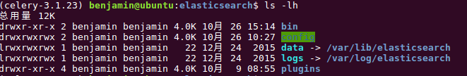

RTDServer安装和配置¶
ReadTheDocs的服务器是使用Ubuntu搭建,以下是搭建过程中的一些经验.
内容目录:
服务器安装¶
系统安装¶
系统镜像¶
ISO下载可以通过国内的一些镜像地址进行下载,这里使用的是 清华大学镜像 ,版本为 Ubuntu 14.04 Desktop 版 (镜像太大,这里就不提供下载了).
注意
1. 在安装时,最新的Ubuntu版本为 16.10 ,尝试过 16.04,但是由于系统内置了 Python-2.7.12,而 APT 上 python-dev 为 2.7.11 无法安装, 因此缺少 Python.h ,需要通过源码编译的Python库无法正常编译.由于对Ubuntu不是很熟悉,遂放弃,选择了低版本.
注意
- 尝试过使用 Ubuntu Server版 , 而后发现 Server版 仅适合不需要编译的项目,上面没有 gcc, 没有 unzip,遂,弃之...
虚拟机¶
系统安装在VMWare上,默认系统安装完后会自动安装VMTools.
如果VM没有自动安装 VM Tools ,可以手动选择安装 VM Tools .将 VM Tools 拷贝到磁盘目录下,解压,然后执行install.pl即可.
作用: 虚拟机分辨率按照窗口大小进行自适应.
代理¶
由于网络限制,先安装代理客户端.安装完毕之后将`src`中的配置文件 proxychains.conf 拷到/etc目录下.修改配置文件,至于配置内容这里就不列出了.
使用方式:
proxychains4 <program_name> [program_params...]
软件安装¶
一些常用的软件并没有被内置到桌面版中,需要手动安装.
vim¶
sudo proxychains4 apt install vim
# 如果报 vim-common 的版本不匹配的话, 先卸载 vim-common,然后再执行安装,vim会自动安装vim-common
sudo proxychains4 apt remove vim-common
sshd¶
默认的配置的下,ubuntu是不支持ssh连接的.需要安装openssh-server才能使用.
# openssh-server 包含了client
sudo proxychains4 apt install openssh-server
ElasticSearch¶
在 Ubuntu 16.04 上,可以直接使用apt安装,遗憾的是14.04上并没有 ElasticSearch,只能手动安装.
ElasticSearch-1.7.3.deb , elasticsearch-analysis-icu-2.7.0
# 先通过apt安装jre
sudo proxychains4 apt install openjdk-7-jre
# 安装 ElasticSearch
# dpkg -i path_to_elasticsearch-1.7.3.deb
dpkg -i ./elasticsearch-1.7.3.deb
# 安装 icu 插件
./plugin -u file:./elasticsearch-analysis-icu-2.7.0.zip -i elasticsearch-analysis-icu
# 赋予当前用户权限
sudo chown -R rtdroot.rtdroot /usr/share/elasticsearch/
# 如果是apt安装还需要给以下目录权限
sudo chown -R rtdroot.rtdroot /etc/elasticsearch/
sudo chown -R rtdroot.rtdroot /var/log/elasticsearch/
sudo chown -R rtdroot.rtdroot /var/lib/elasticsearch/
注意
1. 通过apt安装的ElasticSearch,运行plugin会报找不到配置文件的错误.将plugin的运行结果形成的java命令行转储为shell脚本直接执行java命令则可以成功运行.
plugin.java.sh ,使用方式同plugin.
注意
- 通过deb安装的ElasticSearch,目录结构如下:
其相关目录是直接建立在share目录下的.而通过apt安装的ElasticSearch的目录如下:
相关目录是软链接.
通过deb安装的ElasticSearch需要给相关目录权限,否则会报权限错误.
注意
3. 通过deb安装的ElasticSearch,没有data和config.data目录自己建一个就好了.没有config目录以及里面的配置文件.
config目录自己建一个,配置文件包含: elasticsearch.yml 和 logging.yml.
配置文件中包含了目录结构信息,data和log的路径都在yml配置路径中
Redis¶
RTD的任务队列在非饥渴模式下会使用Redis数据库.
安装Redis Redis-3.0.7 :
# 解压
tar -xvzf redis-3.0.7.tar.gz
# 编译
make
# 安装
sudo make install
# 运行目录和配置文件
mkdir -p ~/workspace/redis/
cp redis.conf ~/workspace/redis/
# 直接使用默认配置启动redis
redis-server ~/workspace/redis/redis.conf &
可选软件¶
VNCServer¶
VNCServer提供了图形界面远程访问的可能性,当前服务器装在虚拟机上,与共享方式相比,安装VNC会相对来说方便一些(虚拟机共享会将虚拟机文件移动至其指定的位置).
# vnc server 有很多,这里选择的是 x11vnc
sudo proxychains4 apt install x11vnc
# 配置vnc密码
sudo x11vnc --stordpasswd /etc/x11vnc.pass
# 创建服务
sudo vim /lib/systemd/system/x11vnc.service
# x11vnc.service文件内容如下
[Unit]
Description=Start x11vnc at startup.
After=multi-user.target
[Service]
Type=simple
ExecStart=/usr/bin/x11vnc -auth guess -forever -loop -noxdamage -repeat -rfbauth /etc/x11vnc.pass -rfbport 5900 -shared -o /var/log/x11vnc.log
[Install]
WantedBy=multi-user.target
# ubuntu 14.04 创建 /etc/init/x11vnc.conf
start on login-session-start
script
/usr/bin/x11vnc -auth guess -forever -loop -noxdamage -repeat -rfbauth /etc/x11vnc.pass -rfbport 5900 -shared -o /var/log/x11vnc.log
end script
# 配置防火墙,服务等
sudo ufw allow 5900
sudo systemctl enable x11vnc.service
sudo systemctl daemon-reload
# 启动服务
sudo service x11vnc start
小技巧
如果无法访问连接上的话,可以在terminal中手动执行上面的命令,查看运行输出结果.也可以在上面的命令行后面指定日志存放路径.
bind9¶
安装bind9以提供DNS解析,使我们可以通过域名来解析站点(需配置访问PC的DNS服务器),不用每次部署都去修改相关脚本的IP设置(也可以安装Bower和Gulp重新生成相关脚本).
# 安装bind9
sudo proxychains4 apt install bind9
texlive-latex¶
如果你需要编译PDF文档,那么texlive-latex则是必选的组件. 但是,尽管在各种报错解决了之后,生成的PDF在一些换行处理上还是有问题,也许是设置上的问题,也许是缺陷,因此,不建议开启PDF生成功能!!
# 安装pdflatex
sudo proxychains4 apt install texlive-latex-base
# 安装中文语言包
sudo proxychains4 apt install texlive-lang-cjk
注意
1. 安装pdflatex时预到了不少问题,主要是 apt install 的时候报错,后来也试过给系统装上了中文语言包. 给系统装的时候也报错,后来把这两个给remove了,然后再进行的安装,后来再安装相同的包的时候就没有报错了, 猜测跟系统的语言包还是有点关系的 .另外, CJK 这里只安装了 cjk-chinese .
注意
- pdf生成的时候遇到了Unicode编码问题,通过增加配置项解决.另外如果标题作者也带中文的话,则需要修改为: u’\unexpanded{中文作者}’
# Fix for CJK, gbsn stand for Chinese Simplified
if project.language and project.language in ["zh", "zh_CN"]:
latex_elements_zh_str = """
# Fix for CJK, gbsn stand for Chinese Simplified
latex_elements_zh = {
'preamble': '''
\\\\hypersetup{unicode=true}
\\\\usepackage{CJKutf8}
\\\\AtBeginDocument{\\\\begin{CJK}{UTF8}{gbsn}}
\\\\AtEndDocument{\\\\end{CJK}}
'''
}
if latex_elements:
latex_elements.update(latex_elements_zh)
else:
latex_elements = latex_elements_zh
"""
rtd_string += latex_elements_zh_str
注意
3. pdf生成的时候还遇到了png报错的问题,原因是png不可识别.而这里的png图片是通过RTX的截图保存所得来的.因大部分截图应该都是通过RTX的截图来的, 因此修改了源代码中的相关部分,在生成pdf前,先用convert把图片给转换一次.
ReadTheDocs部署¶
源码获取¶
当前源代码放在了我自己的SVN服务器上.从SVN下载源码.
# 本地路径创建,请随意
mkdir -p ~/workspace/projects/rtd
cd ~/workspace/projects/rtd
# 源代码获取
svn co http://10.2.25.3/svn/OpenSourcePythonCodes/ReadTheDocs/trunk/ .
注意
当前SVN上的代码是已经完成了Bower和Gulp安装,生成了相关静态文件后的结果.如果是直接从GitHub上下载的源码,则还需要初始化Bower和Gulp来下载和构建静态文件.
Pyhton虚拟环境¶
在有proxychains的情况下,直接在线安装pyhton环境.不过建立虚拟环境还是直接用离线的方式比较效率.
# 虚拟环境目录
cd ~/workspace/projects/rtd/env/
# virtualenv初始化
python -mvirtualenv --no-site-packages .
# 当前环境变量导出
source bin/activate
# RTD 编译Python 模块所需要的包
sudo proxychains4 apt install libxml2-dev libxslt1-dev zlib1g-dev
# python模块安装
proxychains4 pip install -r ../requirements/deploy_local.txt
数据库初始化¶
数据库这里我们还是使用sqlite,其本身的部署环境使用的是 Postgres .
# 回到项目根目录
cd ~/workspace/projects/rtd/
# 数据库同步
python manage.py migrate
# 创建超级用户
python manage.py createsuperuser
项目运行配置¶
Gunicorn¶
按照RTD的部署结构图,Django是运行在Gunicorn上的. settings.deploy 设置相关的运行配置,包括`Django`的`INSTALL_APPS`.
# 前台运行,运行成功后,进程进入阻塞状态
gunicorn readthedocs.wsgi:application -b 127.0.0.1:8000
# 后台运行
nohup gunicorn readthedocs.wsgi:application -b 127.0.0.1:8000 &
Nginx¶
Ubuntu下默认的配置文件在 /etc/nginx/ 目录下. 默认安装的版本为 1.4.6.
在该版本下, 基础配置文件在 nginx.conf 中. 如无特殊需求,可不必修改.
站点配置文件在 sites-available 目录中, nginx.conf 中配置了加载 sites-enabled 目录下的配置文件,因此,正如其名称一样,要启用站点配置,将文件从 available 软链接到 enabled 目录即可.
配置站点,主要内容如下:
server {
location / {
proxy_pass http://127.0.0.1:8000;
proxy_set_header Host $host;
proxy_set_header X-Real-IP $remote_addr;
proxy_set_header X-Forwarded-For $proxy_add_x_forwarded_for;
}
}
静态资源配置¶
RTD的部分静态文件是靠Bower和Gulp生成的,而实际使用的是 media 目录下的内容,因此需要做一些软链接来提供静态资源访问.
# 切换到media目录
cd ~/workspace/projects/rtd/media/
# 软链接
# fonts
ln -sf ./static/core/font/ fonts
cd font
ln -sf ../static/core/font/fontawesome-webfont.* .
ln -sf ../static/core/font/fontawesome-webfont.eot ./fontawesome_webfont.eot
ln -sf ../static/core/font/fontawesome-webfont.svg ./fontawesome_webfont.svg
ln -sf ../static/core/font/fontawesome-webfont.ttf ./fontawesome_webfont.ttf
ln -sf ../static/core/font/fontawesome-webfont.eot ./fontawesome_webfont.eot
# css
cd ../css/
ln -sf ../static/core/css/*.css
# js
cd ../javascript/
ln -sf ../static/core/js/*.js .
ln -sf ../static/vendor/underscore-standalone.js ./underscore.js
cd jquery/
ln -sf ../../static/vendor/jquery-standalone.js ./jquery-2.0.3.min.js
ln -sf ../../static/vendor/jquery-migrate-standalone.js ./jquery-migrate-1.2.1.min.js
ln -sf ../../static/vendor/jquery-ui-standalone.js ./jquery-ui-1.8.24.custom.min.js
ElasticSearch默认索引¶
ElasticSearch在启动之后并为创建默认的索引集合.需要手动创建.
# 在项目根目录下执行python(虚拟环境)
from readthedocs.search.indexes import Index, PageIndex, ProjectIndex, SectionIndex
# 创建默认索引
index = Index()
index_name = index.timestamped_index()
index.create_index(index_name)
index.update_aliases(index_name)
# 更新映射
proj = ProjectIndex()
proj.put_mapping()
page = PageIndex()
page.put_mapping()
sec = SectionIndex()
sec.put_mapping()
Redis¶
Redis在目前的使用下几乎不需要什么额外的配置,其主要作用是消息队列存放.
# 修改redis的工作路径
dir /home/rtdroot/workspace/redis/
# 修改日志文件的路径,默认为/dev/null
logfile "/home/rtdroot/workspace/redis/redis.log"
后台启动Redis:
nohup redis-server /home/rtdroot/workspace/redis/redis.conf &
Celery¶
Celery在这里使用的是DjCelery,所以其配置直接使用的Django的配置.
后台启动Celery:
# 启用Python虚拟环境
source /home/rtdroot/workspace/projects/rtd/env/bin/activate
# 切换到工作目录
cd /home/rtdroot/workspace/projects/rtd/
# 后台启动celery worker,可以用通过 kill -15 <pid_of_main> 来结束掉worker
nohup python manage.py celery worker -l info -Q celery,web > logs/celery_worker.log &
DNS配置¶
为了支持域名解析,我们需要配置DNS服务器来解析自己的域名.
注解
以下配置只是保证域名能正常解析,并不一定是最优的配置方式.
- 配置正向解析, 域名 -> IP
先配置域名解析服务器对应的正向解析域:
; BIND reverse data file for cdforward.org
;
; This task effects after several tries
;
$TTL 86400
@ IN SOA cdforward.org. root.cdforward.org. (
2 ; Serial
604800 ; Refresh
86400 ; Retry
2419200 ; Expire
86400 ) ; Negative Cache TTL
;
@ IN NS ns.cdforward.org.
@ IN A 10.2.25.113
ns IN A 10.2.25.113
再配置ReadTheDocs对应的正向解析域:
; BIND reverse data file for rtd4cdforward.io
;
; This task effects after several tries
;
$TTL 86400
@ IN SOA rtd4cdforward.io. root.rtd4cdforward.io. (
2 ; Serial
604800 ; Refresh
86400 ; Retry
2419200 ; Expire
86400 ) ; Negative Cache TTL
;
@ IN NS ns.cdforward.org. ; use ns.cdforward.org as ns
@ IN A 10.2.25.113 ; local ip
www IN A 10.2.25.113 ; provide www
* IN A 10.2.25.113 ; provide subdomain
- 配置逆向解析, IP -> 域名
因为DNS服务器和我们的文档服务器都在一个上面,因此仅配置一个即可.
; BIND reverse data file for 10.2.25.113
;
; This task effects after several tries
;
$TTL 86400
@ IN SOA cdforward.org. root.cdforward.org. (
2 ; Serial
604800 ; Refresh
86400 ; Retry
2419200 ; Expire
86400 ) ; Negative Cache TTL
;
@ IN NS cdforward.org.
113 IN PTR ns.cdforward.org. ; 10.2.25.113 is point to ns.cdforward.org
小技巧
DNS的解析是反向的,从右到左.
- 包含以上配置文件.
//
// Do any local configuration here
//
// Consider adding the 1918 zones here, if they are not used in your
// organization
//include "/etc/bind/zones.rfc1918";
// domain -> ip
zone "cdforward.org" in {
type master;
file "/etc/bind/db.cdforward.org";
};
zone "rtd4cdforward.io" in {
type master;
file "/etc/bind/db.rtd4cdforward.io";
};
// ip -> domain
zone "25.2.10.in-addr.arpa" in {
type master;
file "/etc/bind/db.25.2.10";
};
重启服务器之后,配置生效. 可以通过 dig 或者 nslookup 来测试.
注意
客户端PC需要配置DNS指向这里的DNS服务器才能解析域名.
项目运行¶
运行相关的内容在各项配置下实际均有说明,这里做一个总结.
后台运行¶
总结起来需要运行的命令包含如下:
# 1. 后台运行 ElasticSearch
/usr/share/elasticsearch/bin/elasticsearch -d
# 2. 后台运行 Redis
nohup redis-server /home/rtdroot/workspace/redis/redis.conf &
# 3. 启动Python虚拟环境
cd /home/rtdroot/workspace/projects/rtd/
source env/bin/activate
# 4. 后台运行 Celery
nohup python manage.py celery worker -l info -Q celery,web > logs/celery_worker.log &
# 5. 后台运行 Gunicorn
nohup gunicorn readthedocs.wsgi:application -b 127.0.0.1:8000 &
# 6. Nginx & Bind9 在当前安装情况下都是系统服务,随系统启动.可通过如下命令重启
sudo service nginx restart
sudo service bind9 restart
运行日志¶
各模块的运行日志所在路径如下:
ElasticSearch:
/usr/share/elasticsearch/logs/
Redis:
/home/rtdroot/workspace/redis/redis.log
Celery:
/home/rtdroot/workspace/projects/rtd/logs/celery_worker.log
Gunicorn(Django):
/home/rtdroot/workspace/projects/rtd/logs/rtd.log
Nginx:
/var/log/nginx/
系统服务日志(nginx,bind9等):
/var/log/syslog